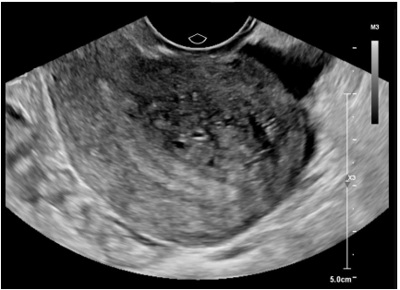

Mulher, 44 anos de idade, 3G 3P, apresenta dismenorreia progressiva há 2 anos, associada a aumento do volume menstrual e dispaurenia, há 8 meses, di cultando o relacionamento sexual. Ao exame: útero aumentado 2 vezes de tamanho, consistência amolecida. US pélvico: útero heterogêneo, focos hiperecogênicos puntiformes em meio a trama miometrial, espessura endometrial 8 mm, volume uterino: 178 ml, ovários sem alterações. A conduta mais adequada é:
Paciente com 39 anos, sem lhos, vem à consulta referindo uxo menstrual aumentado nos últimos três meses. Traz ecogra a transvaginal sugestiva de adenomiose leve e difusa e hemoglobina de 12,2g/dL. Qual a conduta inicial correta no acompanhamento dessa paciente?
Paula, 33 anos, G0P0, hipertensa, com queixa de dismenorreia e uxo menstrual volumoso com coágulos. USG transvaginal revelando útero com discreto aumento de volume, espessamento miometrial assimétrico em parede posterior com áreas de sombras acústicas e pequenas áreas anecoicas subendometriais. Considerando o principal diagnóstico, qual conduta mais indicada?
Mulher de 42 anos de idade, G3P3, queixa-se de aumento da duração e quantidade do uxo menstrual há oito meses. Refere também dismenorreia intensa. O exame físico é compatível com útero discretamente aumentado de volume. A ultrassonografia está representada na imagem a seguir. Nesse caso, qual é a hipótese diagnóstica mais provável?

A.M.S., 44 anos GII/PII/AO 2PC, laqueadura tubária, encontra-se em acompanhamento ginecológico por dismenorreia importante associada a aumento de uxo menstrual surgido nos últimos anos, com caráter progressivo. Realizou exames com RM, apresentando útero globoso com aumento de volume (210 cm³), assimetria de paredes uterinas, heterogeneidade difusa e cistos miometriais. Diante do quadro, qual a hipótese diagnóstica e a primeira linha de conduta terapêutica?
A uma paciente com suspeita clínica e ultrassonográ ca de adenomiose foi solicitada a realização de uma histeroscopia, que demonstrou cavidade uterina normal e endométrio de aspecto proliferativo. Realizou, também, uma biópsia de endométrio em parede posterior. Com base nesse caso hipotético, assinale a alternativa correta.
Revisar: possível letra faltando em enunciado
M.R.F., feminino, 27 anos, apresenta queixa de sangramento menstrual volumoso, durante período menstrual, e dismenorreia. Ao exame físico, apresenta útero aumentado difusamente e doloroso à palpação. Foi realizada uma ultrassonogra a transvaginal, que evidenciou um miométrio heterogêneo e eco endometrial mal definido. Com base nos achados clínicos e ultrassonográficos, assinale a principal hipótese diagnóstica.
Mulher, 35 anos, G3P2A0, três cesáreas prévias, com história de sangramento uterino de 9 dias de duração, com intervalo cíclico mensal regular e de grande volume que extravasa do absorvente, desde última cesárea ha8 anos. Associado quadro de cólicas incapacitantes em baixo ventre, progressiva, que intensi ca nos primeiros 3 dias de uxo necessitando de AINEs. Refere anemia crônica e fraqueza. Realizou ultrassonogra a pélvica transvaginal que excluiu a possibilidade de leiomiomas e mostrou um útero aparentemente normal. Assinale a assertiva correta que corresponde à causa mais provável do sangramento uterino anormal.
Revisar: possível letra faltando em enunciado
Mulher de 32 anos refere dismenorréia intensa e sangramento vaginal intenso durante o período menstrual. Nega: uso de medicamentos e traumas. Exame físico: hipocorada 2+/4, PA= 90/60 mmHg, pulso= 76 pulsações por minuto. Exame especular e toque vaginal bimanual sem alterações. Ausência de lesões em órgãos genitais externos. Exames complementares: Beta-HCG negativo (gonadotro na coriônica humana), hemoglobina= 8.2 g/dl, plaquetas= 250 000 / mm3, ressonância magnética da pelve mostrando zona juncional espessada, sem outras alterações. Dentre as alternativas abaixo o diagnóstico mais provável é:
Paciente de 32 anos, sem atividade sexual há 1 ano, vem à consulta com queixa de sangramento menstrual que aumentou nos últimos 6 meses, associado a cólicas. Ciclos regulares a cada 30 dias, com 7 dias de sangramento. Já engravidou 2 vezes e realizou 2 cesarianas. Ao exame apresenta-se normocorada, genitais externos e internos normais. Citopatológico normal. Ultrassonogra a transvaginal mostra útero com volume de 132 cc, nódulo sugestivo de mioma, localizado em parede posterior medindo 42x35mm, subseroso. Endométrio com 12 mm de espessura, homogêneo. Ovários normais e fundo de saco livre. Assinale a alternativa correta:
Paciente de 37 anos, nuligesta com queixa de dismenorreia progressiva há 3 anos e sangramento menstrual excessivo, procurou ginecologista. O exame ginecológico revelou apenas útero em AVFM e aumentado para gravidez de 2 meses. A ultrassonogra a transvaginal solicitada revelou apenas útero com 180 cc e imagens sugestivas de adenomiose. Isto significa que
Mulher, 35 anos, tem uma cesárea prévia e ainda não decidiu se deseja ou não outro lho no futuro, mas sem planos no momento. Há 01 ano com dismenorreia e menorragia importante, ultrassonogra a transvaginal demonstra útero discretamente aumentado de volume com borramento da interface endomiometrial, sem outras alterações. Nega comorbidades, mas refere que a mãe teve trombose venosa profunda há 05 anos. Assinale a alternativa que indica a hipótese diagnóstica e melhor forma de tratamento:
Paciente, 35 anos, duas gestações, dois lhos vivos, contracepção com condom, comparece a consulta ginecológica queixando-se de forte dismenorreia e uxo menstrual aumentado. Realizou ultrassonogra a transvaginal que evidenciou útero aumentado de volume, ovários normais e endométrio compatível com a fase do ciclo. É CORRETO a rmar que a hipótese diagnóstica mais provável seja:
Em relação ao métodos de imagem em ginecologia, assinale a alternativa incorreta:
Adenomiose é doença uterina prevalente entre as mulheres, frequentemente associada a sintomas como dismenorréia e sangramento uterino anormal. Em relação aos achados histológicos da adenomiose é frequente a observação de:
Sobre as doenças miometriais, é correto afirmar que:
A dor pélvica crônica tem como uma das causas ginecológicas, a Adenomiose que pode ser caracterizada da seguinte forma, EXCETO:
Paciente de 45 anos, G3 P3, com dismenorreia progressiva. Apresenta ainda menstruação com aumento significativo do número de dias e do volume de sangramento no período menstrual. O exame físico revelou um útero aumentado globalmente de volume, com consistência amolecida e útero doloroso à mobilização. De acordo com esse quadro, assinale a alternativa que revela a hipótese diagnóstica mais adequada e a melhor propedêutica para confirmação diagnóstica.
São causas de espessamento endometrial na ultrassonografia transvaginal, EXCETO:
A adenomiose foi referida no passado como cystosarcoma adenoids uterinum. Na maioria das mulheres, os primeiros sintomas podem surgir na adolescência e permanecer na menacme. Em geral, o diagnóstico é feito por achados de histopatologia de peças cirúrgicas. A adenomiose caracteriza-se por
Com relação a patologias ginecológicas benignas, julgue o próximo item. Mulher multípara que tenha sido submetida a curetagens uterinas pós-aborto apresenta maior risco de adenomiose em comparação a uma mulher nulípara da mesma idade.
A adenomiose é causa de sangramento uterino anormal, e tem como característica:
Paciente de 45 anos, queixa-se de menstruações volumosas e dismenorreia há seis meses. Hipertensa controlada com hidroclorotizada e losartana. Gesta 1 Para 0, USG transvaginal; aumento de volume uteríno e miométrio heterogêneo, sem configurar nódulos. As alternativas terapêuticas podem ser:
Qual patologia é responsável por invasão difusa ou focal do miométrio pelo endométrio benigno, ocorrendo, frequentemente em mulhere acima de 30 anos? (FORTNER, KIMBERLY B; SZYMANSKI, LINDA M; FOX, HAROLD E; WALLACH, EDWARD E. Manual de ginecologia e obstetrícia do Johns Hopkins. Complicações do trabalho de parto e do parto. Editora Artmed. 3 Guanabara-Koogan).
Em relação as patologias benignas do útero, assinale a alternativa INCORRETA.
Assinale a alternativa correto:
Paciente feminino, 38 anos de idade, G4P3A1 refere que há 3 anos vem apresentando uxo menstrual abundante (chegando a usar até 6 pacotes de absorventes por ciclo), associado a dismenorreia progressiva e intensa. Ao exame ginecológico, foi notado útero de volume, contorno regular e anexos livres. A ultrassonogra a transvaginal mostrou útero de 413 cm³, miométrio heterogêneo difusamente, endométrio de 1,2 cm, ovário direito 3,6 cm³, e ovário esquerdo 4,8 cm³. A biópsia de endométrio foi normal. Assinale a hipótese PROVÁVEL para o caso descrito.
Sobre as doenças miometriais, é correto afirmar que:
Leia o caso clínico a seguir. Uma paciente multípara, de 45 anos, apresentou sangramento uterino anormal há aproximadamente oito meses. O exame ginecológico evidencia útero aumentado de volume e globoso. A paciente refere dismenorreia intensa associada. Nesse caso, qual é o diagnóstico mais provável?
Sobre a Adenomiose, assinale a alternativa correta:
Priscila, 37 anos, com queixa de aumento do uxo menstrual e cólicas menstruais há 4 anos, com piora progressiva. No momento, uxo menstrual com 8 dias de duração e cólica menstrual intensa por 10 dias, ciclos com duração de 30 dias. Uso de anti- inflamatórios sem alívio da dor. GIII PIII (3 cesarianas). Exame físico: hipocorada ++/+4; IMC = 25 kg/m²; exame abdominal sem alterações. Exame especular sem alterações. Toque com útero em anteverso exão, móvel, globoso, indolor à mobilização, anexos impalpáveis. Marque a opção que confere a principal hipótese diagnóstica e seu respectivo tratamento.
Paciente de 42 anos procura a emergência de atendimento ginecológico por apresentar sangramento uterino intenso no período menstrual, dismenorreia intensa agravada no último ano e dispareunia, que torna a atividade sexual um grande sofrimento pela dor. O grupo em que essa doença pode ser considerada pela classificação PALM-COEIM, de acordo com a FIGO, o diagnóstico e a alteração uterina que pode ser encontrada no exame de toque vaginal são, respectivamente:
Mulher de 45 anos, gesta 2 para 2 (cesáreas), submetida a laqueadura tubária no segundo parto, apresentando dismenorreia secundária e aumento do uxo menstrual (menorragia). Ao toque, observa-se útero difusamente aumentado, com boa mobilidade, sem dor à mobilização. Ao ultrassom endovaginal evidencia-se útero aumentado (198 cm3) e 1 nódulo de 9x9 mm subseroso, fúndico que pode corresponder a mioma. A mais provável causa dos sintomas referidos é:
Mulher de 40 anos, com prole definida, apresentando dismenorreia secundária há 6 meses, associada a aumento da duração e do uxo menstrual. Exame clínico e ultrassonográ co: aumento uterino difuso, sugestivo de adenomiose. A melhor conduta é:
Revisar: possível letra faltando em enunciado
Em uma paciente de 44 anos, Gesta 3 Para 3, que cursa com dismenorreia secundária progressiva e aumento do uxo menstrual, qual é a causa mais provável nesse caso?
Caracteriza a histopatologia da adenomiose:
Sobre adenomiose marque a alternativa CORRETA:
Lia, 45 anos, nuligesta, apresenta queixa de cólicas menstruais de forte intensidade associada à irregularidade menstrual e alto uxo há oito anos, com piora progressiva. Já fez uso de anticoncepcionais orais combinados com pausa sem sucesso terapêutico. A ultrassonogra a indicou heterogeneidade miometrial, além de projeções estriadas lineares estendendo-se do endométrio para o interior do miométrio, sugerindo diagnóstico de adenomiose. A partir disso, assinale a alternativa INCORRETA:
Em paciente de 45 anos, nuligesta com suspeita clínica de adenomiose, o exame complementar “padrão ouro” para a confirmação diagnóstica será:
Mulher de 44 anos, 6 Gesta, 6 Para, refere aumento do uxo menstrual há um ano. Os ciclos são regulares a cada 28 dias e a duração é de 6 dias. No exame físico, observa-se o útero aumentado de tamanho em cerca de três vezes, superfície regular, móvel. Anexos normais. A ultrassonogra a pélvica revela útero globalmente aumentado, com ecotextura difusamente heterogênea, com volume de 300 cm³, eco endometrial homogêneo com espessura de 7 mm e ovários normais. A causa mais provável da queixa clínica é:
A adenomiose:
Mulher de 42 anos procura atendimento com queixa de sangramento menstrual anormal caracterizado pelo aumento dos dias e da quantidade do uxo, há dois anos, com piora nos últimos meses, associado à dismenorreia progressiva. Tem antecedentes de três partos normais, laqueadura tubária há dez anos, sem nenhuma comorbidade. Nega dispareunia e sinusiorragia. Diante desse quadro, a principal hipótese diagnóstica é:
É patologia ginecológica mais comum na quarta década de vida, que acarreta útero globalmente aumentado de volume, dismenorreia e hipermenorreia:
Após consulta ginecológica e realização de ultrassonogra a, um paciente de 35 anos recebe diagnóstico de adenomiose. Para realização do diagnostico qual dos dados a seguir é mais consistente na historia clinico da paciente. Respostas: 1 12 23 34